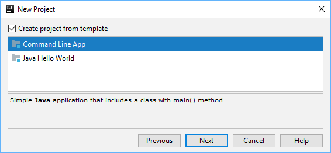
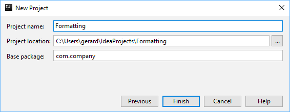
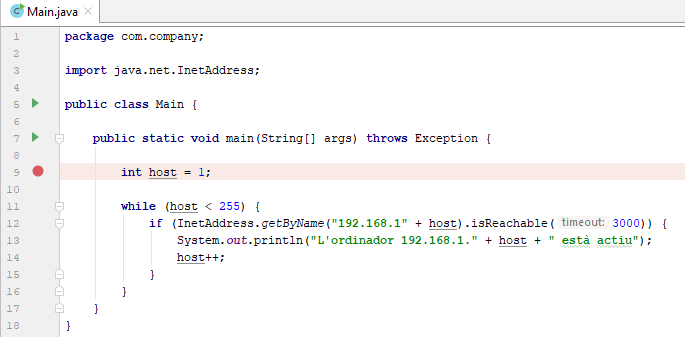
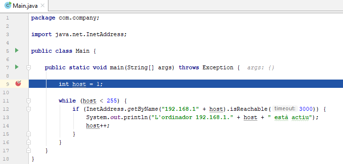
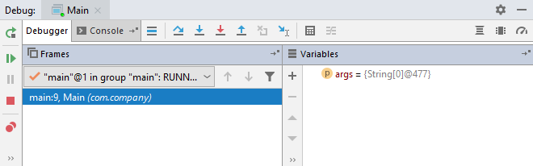
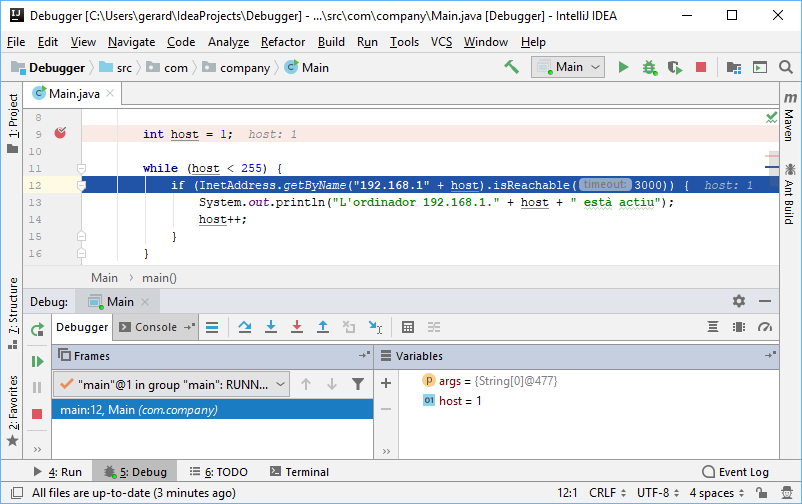
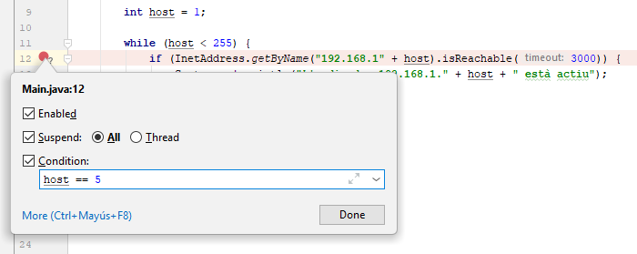
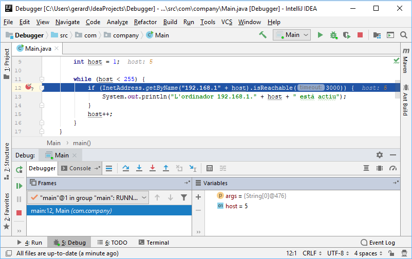
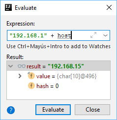
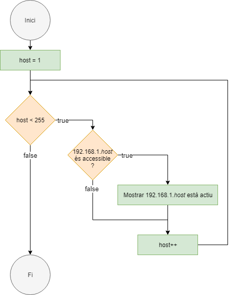

L'objectiu d'aquest CodeLab és la iniciació a l'ús de depurador (debugger).
La depuració de programes és el procés d'identificar i corregir errors de programació (bugs).
IntelliJ proporciona una ampli ventall d'eines per a la depuració del codi. Es pot trobar una guia exhaustiva al següent enllaç: https://www.jetbrains.com/help/idea/debugging-code.html
En aquest CodeLab desenvoluparem un IP-Scanner per esbrinar quins ordinadors que són accessibles.
Inicia IntelliJ i crea un nou projecte anomenat "Debugger".



Per tal de veure si un ordinador és accessible disposem del mètode
El seu ús es molt senzill, únicament hem d'invocar el mètode amb l'adreça IP de l'ordinador que volem comprovar:
public class Main { public static void main(String[] args) { if(InetAddress.getByName("192.168.1.1").isReachable(3000)){ System.out.println("L'ordinador 192.168.1.1 està actiu"); } } }
El que volem ara és comprovar si són accessibles tots els ordinadors de la xarxa:
Si anem copiant i enganxant les instruccions anteriors i canviant la IP de forma manual, el programa funcionaria però... son massa ordinadors!
import java.net.InetAddress; public class Main { public static void main(String[] args) throws Exception { if (InetAddress.getByName("192.168.1.1").isReachable(3000)) { System.out.println("L'ordinador 192.168.1.1 està actiu"); } if (InetAddress.getByName("192.168.1.2").isReachable(3000)) { System.out.println("L'ordinador 192.168.1.2 està actiu"); } if (InetAddress.getByName("192.168.1.3").isReachable(3000)) { System.out.println("L'ordinador 192.168.1.3 està actiu"); } // Són massa ordinadors! if (InetAddress.getByName("192.168.1.254").isReachable(3000)) { System.out.println("L'ordinador 192.168.1.254 està actiu"); } } }
Si ens fixem bé, estem realitzant la mateixa instrucció tota l'estona, i l'única cosa que canvia és el número de HOST de la IP.
Podem tractar d'extraure aquest patró amb un bucle:
import java.net.InetAddress; public class Main { public static void main(String[] args) throws Exception { int host = 1; while (host < 255) { if (InetAddress.getByName("192.168.1" + host).isReachable(3000)) { System.out.println("L'ordinador 192.168.1." + host + " està actiu"); host++; } } } }
Amb aquest bucle pretenem automatitzar l'execució de la instrucció augmentant en cada iteració el número de HOST.
Si executem aquest codi, semblarà que no està fent res, ja que no surtirà res a la consola... pot ser no hi ha cap ordinador accessible a la xarxa... comprovem-ho.
Normalment podem anar seguint la execució d'un programa veient que és el que va mostrant a la consola. En aquest cas no ens serveix de res, ja que no mostra res a la consola.
Una eina millor per a seguir l'execució d'un programa i veure en quin ordre s'estan executant les instruccions és el depurador.
Els breakpoints són punts en els que podem aturar l'execució d'un programa, i observar pas a pas el seu comportament.
Per a afegir un breakpoint, només cal posar el cursor sobre la línia on el volem posar i prèmer
També ho podem fer amb el ratolí, fent clic sobre el panell gris que hi ha just al costat del codi:

Quan afegim un breakpoint, s'indica amb un cercle vermell.
Una cop afegit els breakpoints desitjats, es pot iniciar la depuració de l'aplicació.
Per a iniciar-la fem click a l'icona Debug () o premem
IntelliJ llançará la sessión de depuració. Compilarà i executarà l'aplicació, suspenent-la al primer breakpoint. Podem veure dues coses que han canviat:
- La primera cosa que ha canviat és el color de la primera línea amb un breakpoint. Ara es veurà de color blau:

Això significa que l'execució ha arribat al breakpoint i s'ha parat abans d'executar la sentència.
- A la part inferior de la finestra, ha sorgit el
Debug Tool Window , amb molta informació sobre l'execució del programa.

Anem a fer un pas en l'execució del programa. Fes click sobre la icona , o simplement prem
La següent instrucció es posa en blau:

Si anem avançant en l'execució del programa amb , veurem que el programa es queda permanentment en el bucle
Si mirem al panell Variables, veurem que la variable
Podem deduir que tenim una errada en el lloc on hem posat la sentència
import java.net.InetAddress; public class Main { public static void main(String[] args) throws Exception { int host = 1; while (host < 255) { if (InetAddress.getByName("192.168.1" + host).isReachable(3000)) { System.out.println("L'ordinador 192.168.1." + host + " està actiu"); } host++; } } }
Si tornem a fer l'execució passa a passa, veurem com ara la variable
Tot i això, segueix sense aparèixer res a la consola, com si no hi hagués cap ordinador accessible a la xarxa... Què extrany, al menys el nostre ordinador deuria respondre!
Breakpoints condicionals
Podem anar avançant l'execució del programa fins que arribi al número de HOST del nostre ordinador (o podríem directament fer que la variable host comenci per aquest número). Però hi ha una altra forma de fer-ho.
Podem fer que el programa s'executi normalment, sense parades, fins que la variable host arribi al número que desitjem, i aleshores detenir l'execució i passar al mode depuració.
Suposem que la nostra adreça és
Per a fegir un breakpoint condicional, fem click-dreta sobre el breakpoint i afegim la condició desitjada. En el nostre cas, ens interessa que es pari quan el valor de

Si iniciem la depuració, l'execució del programa s'aturarà en el breakpoint quan es compleixi la condició

Per què arribats a aquest punt no està entrant en el
En aquest punt podem tractar de veure si pot ser l'error el tenim en la forma en que construim la ip:
Avaluar expressions
Seleccionem l'expressió

Podem veure que l'expressió
Amb la informació obtinguda de la depuració del programa ja podem acabar el nostre IP-Scanner:
import java.net.InetAddress; public class Main { public static void main(String[] args) throws Exception { int host = 1; while (host < 255) { if (InetAddress.getByName("192.168.1." + host).isReachable(3000)) { System.out.println("L'ordinador 192.168.1." + host + " està actiu"); } host++; } } }
I obtenim el resultat esperat:
